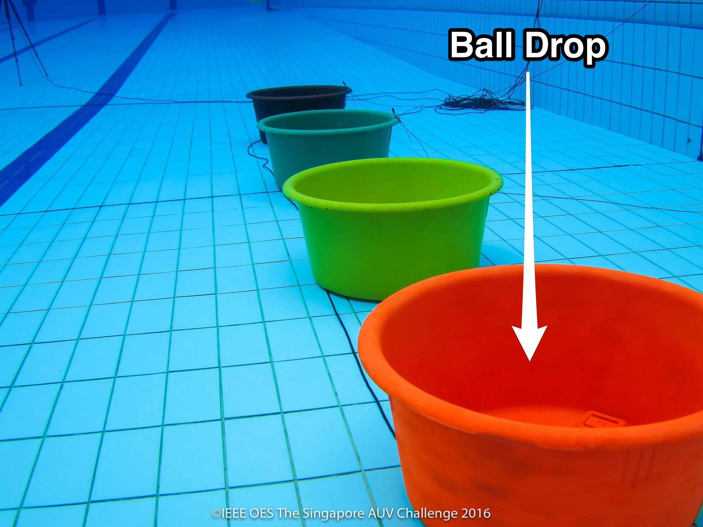
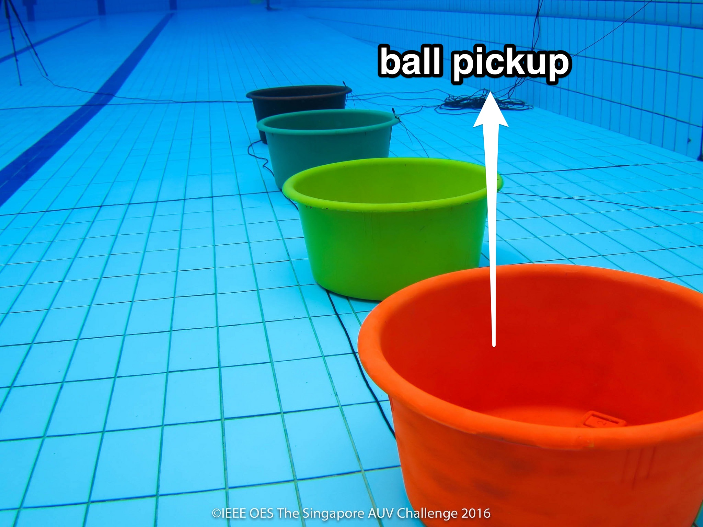
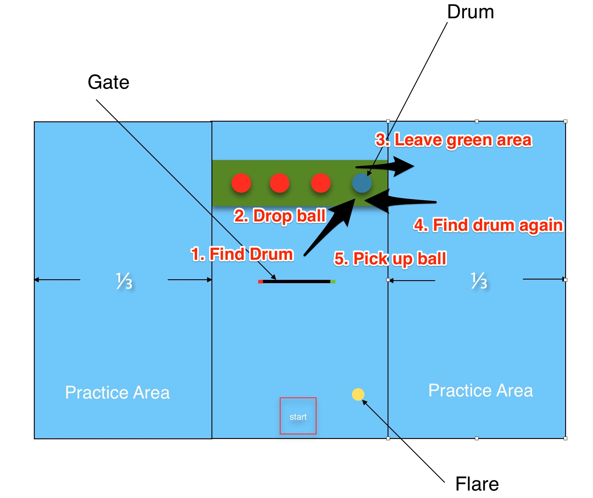
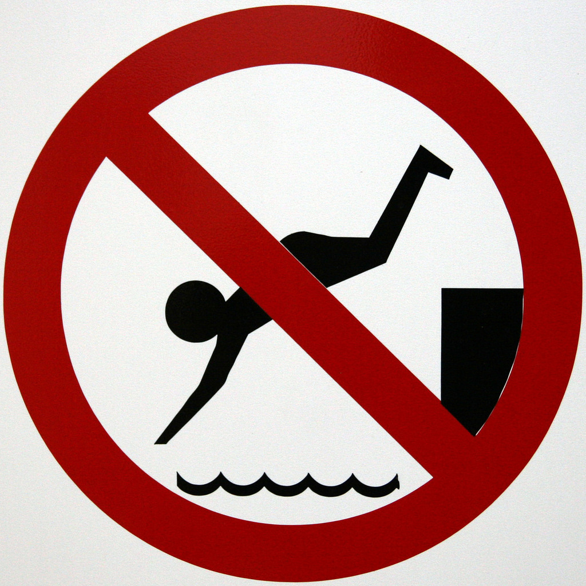
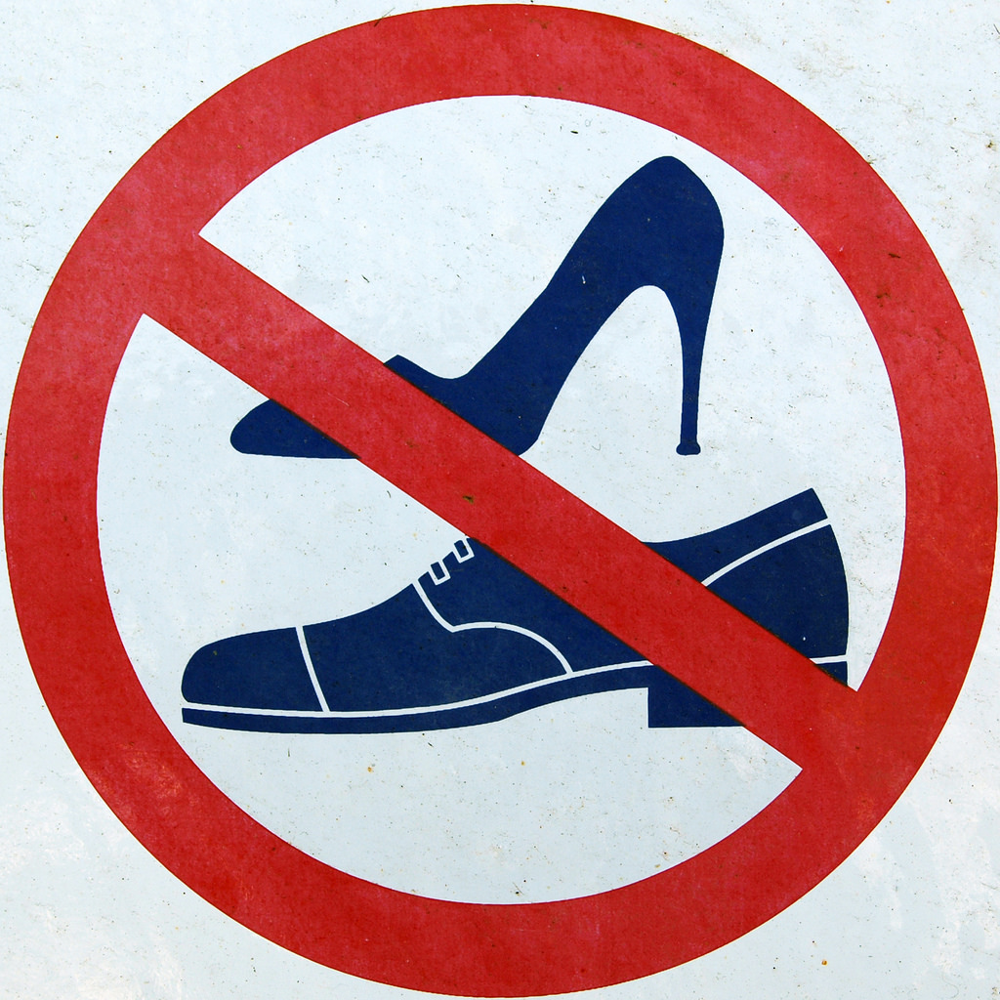
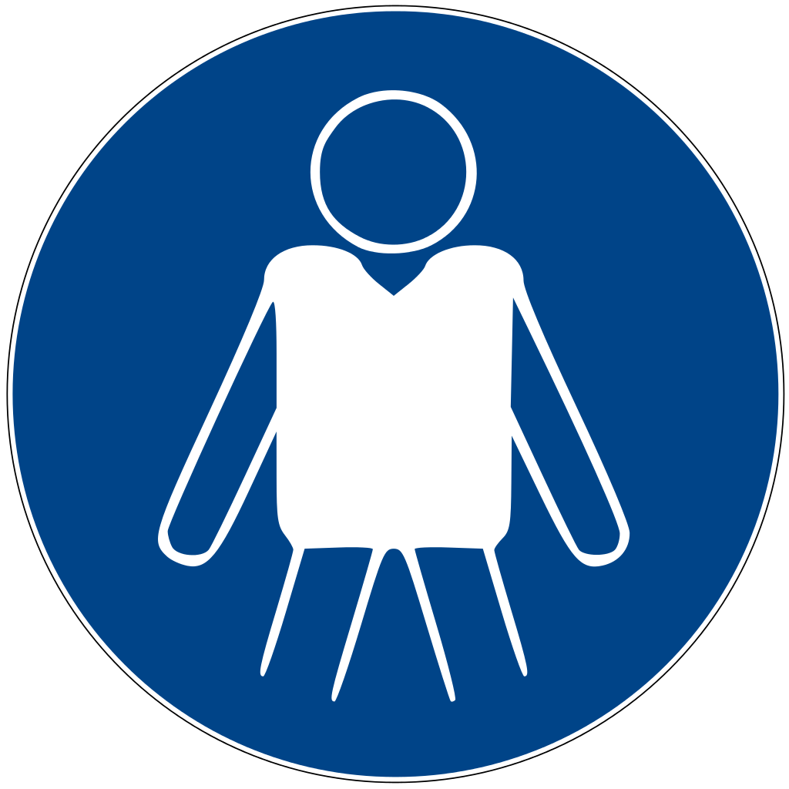
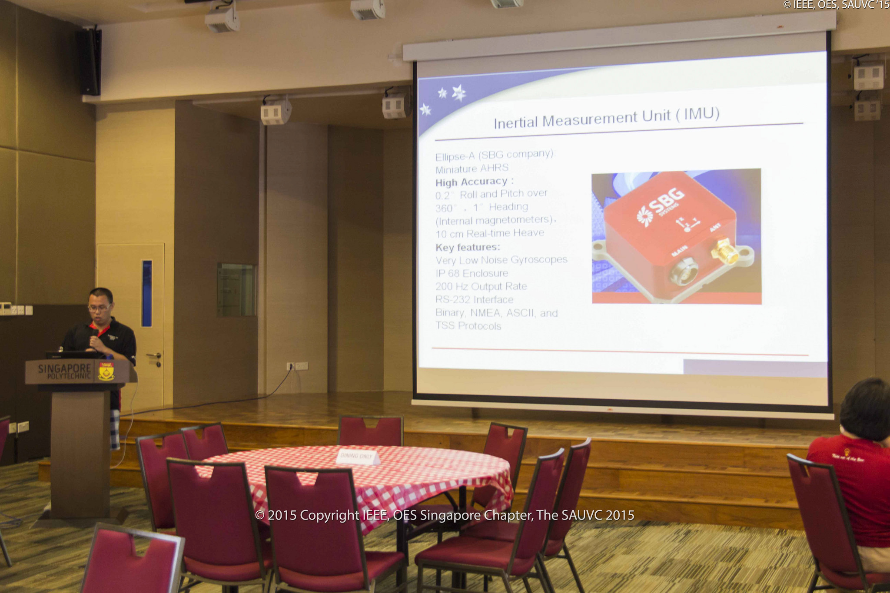

SAUVC 2017
Game rules and regulations
#sauvc2017
Safety
- AUVs should not leak and pollute the pool.
- AUVs must have a bright yellow kill switch that turns off the vehicle.
 ### Game Sequence
1. AUVs will undergo weight and size check.
- AUVs will be tested for battery, oil or lubricant leak. Failing the leak test would lead to disqualification of team.
- AUVs will proceed to qualifying round.
- The qualified AUVs will proceed for the final rounds of competition.
### Qualification Round
- AUVs have to pass a qualifying round before they can participate in the main arena.
- To qualify an AUV has to swim **10 meters** and **without surfacing or touching the bottom/wall**.
- The qualifier round timing decides the sequence for final round of the competition.
### Game Sequence
1. AUVs will undergo weight and size check.
- AUVs will be tested for battery, oil or lubricant leak. Failing the leak test would lead to disqualification of team.
- AUVs will proceed to qualifying round.
- The qualified AUVs will proceed for the final rounds of competition.
### Qualification Round
- AUVs have to pass a qualifying round before they can participate in the main arena.
- To qualify an AUV has to swim **10 meters** and **without surfacing or touching the bottom/wall**.
- The qualifier round timing decides the sequence for final round of the competition.
The Arena
 ### Starting Zone
- The teams **must** start their AUVs from the starting zone which is a 140×140cm area marked on the surface of water.
- The team may only place the AUV at the water surface, it must **autonomously submerge before** leaving the starting zone.
### Starting Zone
- The teams **must** start their AUVs from the starting zone which is a 140×140cm area marked on the surface of water.
- The team may only place the AUV at the water surface, it must **autonomously submerge before** leaving the starting zone.
Tasks
- Navigation (Gate)
- Target Acquisition (Ball Drop)
- Target Reacquisition (Ball pickup)
- Localization (Flare)
### Navigation (Gate)
- The aim of the this task is to swim through a gate in water.
- There is a penalty for **touching the gate**.
Target Acquisition (Ball Drop)

### Target Acquisition (Ball Drop)
- The aim of the task is drop a ball into one of the drums at the bottom of the pool.
- Drop the ball in the Blue drum. **[30 Points]**
- Drop the ball in the Red drum with the pinger (45kHz). **[50 Points]**
- Dropping the ball in any other Red drum. **[10 Points]**
- The location of the pinger **may be changed** in between retries.
Target Reacquisition (Ball pickup)

### Target Reacquisition (Ball Drop)
- The aim of the task is pick a ball from the drum you dropped it into.
- This task is only attemptable if the Target Acquisition has been successfully completed
- AUV has to leave the target zone (green mat), before it can attempt the Target Reacquisition task
- AUV has to hold on to the ball till the end of the attempt
Target Reacquisition (Ball pickup)

### Localization (Flare)
- Bump the flare causing the golf ball in the flare to drop out
- The flare is marked with an acoustic pinger (37.5kHz).
- This flare could be located **anywhere** within the main arena.
### Surfacing
- If the AUV surfaces any **any time** during the mission, the current attempt comes to an **end**.
### Timing Bonus
- as long as the AUV has successfully completed the Navigation task, bonus points proportional to the remaining time.
`Bonus points = (900 - RUN_TIME) • 0.03`
### Penalties
| | Description | Penalty Points |
| -- | ----------- | -------------- |
| 1 | Touching the gate | 2 |
| 2 | AUV touches the bottom of the pool or wall for `t` secs| 5 + max(0,4•(t-10)) |
### Game Procedure
- 5 Minutes Setup time + 15 Minutes Run time (including ALL retries).
- Retry attempt can be made only after the judge’s permission.
- Retry would mean that the AUV starts from the start zone with 0 points.
- Attempt with the highest score (including retries) will be considered for final scoring.
- Once your team passes the qualification round, you can register for main arena slots with the _Slot Master_.
### Diver Communication
- _Game Master_ will help you relay messages to the divers.
- Tell the _Game Master_ **clearly** if you want your AUV stopped and retreived by divers.
House Rules
- You have to sign and return the Indemnity Form before you can enter ANY of the pools.
- NO team member should enter the main pool.
- No footware (shoes, slippers, etc) near the pool.
- All teammembers near the pool MUST wear lifejackets.



Technical Presentation
- 10 minutes presentation on design and engineering process of AUV on (Day 4) Monday.
- The presentation will be judged and teams will get up to 15 points.
- Share, learn and make friends!

### Photography Competition
- “Most Liked Photograph” competition.
- Take photos during the competition.
- Upload to **our (Singapore AUV Challenge)** Facebook page with hashtag `#sauvc2017`.
- The photo with most number of likes will win a prize.
- The deadline for uploading the photo is 1600h, Day 4 (13 March 2017, Monday).
### Baby Pool Testing
- In the children's pool/baby pool.
- **Any time** after Day 1 (10 March 2017, Monday), 1330h.
- You have to return the indemnity form to us **before** you can get into any pools.
- No footware inside the pool!
### Early Qualification
- In the main pool (side lanes).
- Any time after Day 1 (10 March 2017, Monday), 1330h.
- You have to return the indemnity form to us **before** you can get into any pools.
- Contact me (or any other judges) for a qualifier slot.
### Timing Clarification
- Day1 : Testing in baby pool allowed till 1800h. Wrap up at 1800h. ESC Lab closes at 1830h
- Day2 : Practice/Qualifiers allowed till 1750h. Wrap up at 1800h. ESC Lab closes at 1830h
- Day2 : Competition till 1730h. Wrap up at 1730h. ESC Lab closes at 1830h